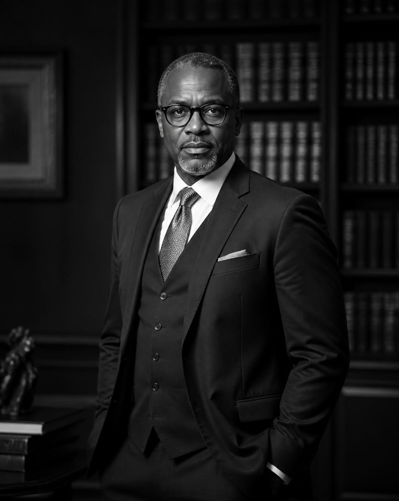

Chartered accountant. Former CFO of Anchor Telecoms Nigeria for a decade. Over 20 years of financial leadership across telecommunications, manufacturing, oil & gas and engineering, spanning five countries of operation.
"Financial discipline is not a department. It is the operating system of a serious enterprise."
Abiola Adekola began his career in chartered accounting practice in the late 1990s, moving into industry in 2004 with senior finance appointments across manufacturing, engineering and oil & gas enterprises. In 2013 he was appointed Chief Financial Officer of Anchor Telecoms Nigeria, a role he held for a full decade.
As CFO he led finance across five countries of operation, instituting IFRS-grade reporting, transfer-pricing frameworks, treasury discipline and board-level financial governance. He represented the group in engagements with lenders, tax authorities, regulators and international investors, and was a central architect of the company's capital and operating transformation over the period.
He holds an MBA and a portfolio of chartered credentials across accounting, management accounting, taxation, forensic accounting, IFRS and quality management. He founded Brightsage Ezzential Global Services to bring that same standard of executive counsel to Nigerian corporates and growing enterprises.
Audit, assurance and advisory across Lagos-based enterprises. Foundational years in professional discipline.
Progressive finance leadership across manufacturing, engineering and oil & gas enterprises.
Ten years leading finance for a national telecommunications operator across five countries of operation.
Executive advisory practice serving Nigerian and West African corporates.
Serious enterprises deserve serious counsel — delivered directly, held to institutional standard, and measured in the durability of the businesses we help build.
My work is guided by four convictions: that discipline compounds; that clarity is a kindness to decision-makers; that independence must be earned continuously; and that the finance function is the honest mirror of an organisation's real character.
MBA — Master of Business Administration
ACMA — Associate, Chartered Institute of Management Accountants
ACCMN — Associate, Chartered Cost Management Nigeria
Cert-IFRS — International Financial Reporting Standards
CFACI — Certified Forensic Accountant
ACTI — Associate, Chartered Institute of Taxation
CQMISA — Certified Quality Management ISA
CCA — Certified Chartered Accountant
Adv. Dip Forensics — Advanced Diploma, Forensic Accounting